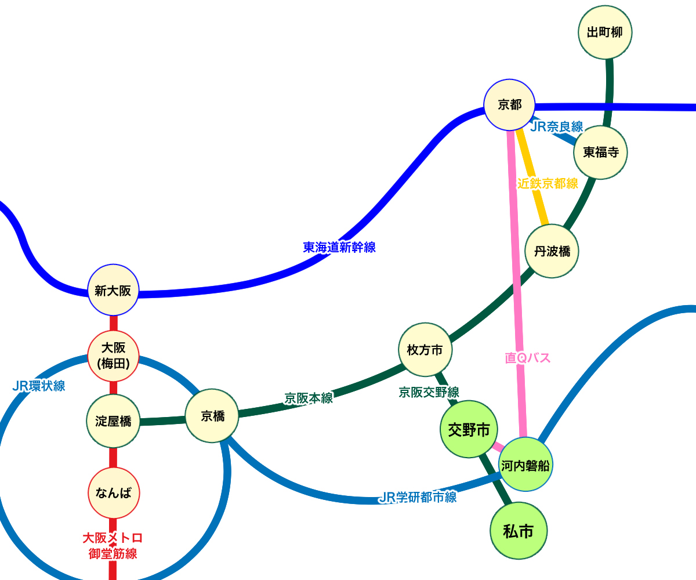
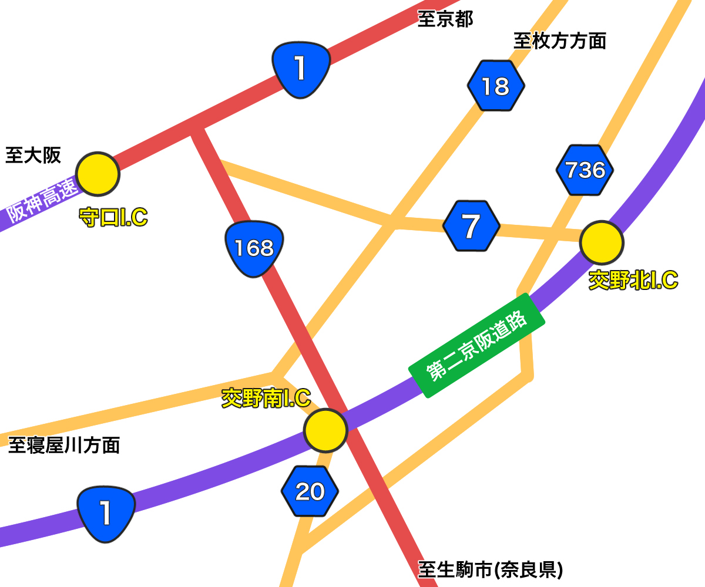

今回紹介したスポット
交野市への行き方

公共機関での行き方

★京阪でお越しの場合（該当駅：郡津駅、交野市駅、河内森駅、私市駅）★
大阪方面・・・
・各線「淀屋橋駅」から京阪本線に乗り「枚方市駅」まで行き、京阪交野線に乗り換え（所要時間：約30～35分）
・各線「京橋駅」から京阪本線に乗り「枚方市駅」まで行き、京阪交野線に乗り換え（所要時間：約25～30分）
・「なんばOCAT」から「ダイレクトエクスプレスバス直Q京都」に乗車→「京阪交野市駅」で降車（所要時間：約35分）
京都方面・・・
・京阪本線「出町柳駅」から「枚方市駅」→京阪交野線に乗り換え（所要時間：約50～55分）
・JR各線「京都駅」からJR奈良線「東福寺駅」で京阪本線「東福寺駅」に乗り換え「枚方市駅」まで行き、京阪交野線に乗り換え（所要時間：約65～70分）
・近鉄奈良線「京都駅」から「近鉄丹波橋駅」で京阪本線「丹波橋駅」に乗り換え「枚方市駅」まで行き、京阪交野線に乗り換え（所要時間：約50～55分）
・「京都駅八条口」から「ダイレクトエクスプレスバス直Q京都」に乗車→「京阪交野市駅」で降車（所要時間：約45分）
★JRでお越しの場合（該当駅：河内磐船駅、星田駅）
大阪方面・・・
・各線「京橋駅」からJR学研都市線に乗車（所要時間：約18～20分）
・「なんばOCAT」から「ダイレクトエクスプレスバス直Q京都」に乗車→「河内磐船駅」で降車（所要時間：約45分）
京都方面・・・
・「京都駅八条口」から「ダイレクトエクスプレスバス直Q京都」に乗車→「河内磐船駅」で降車（所要時間：約35分）
車での行き方
